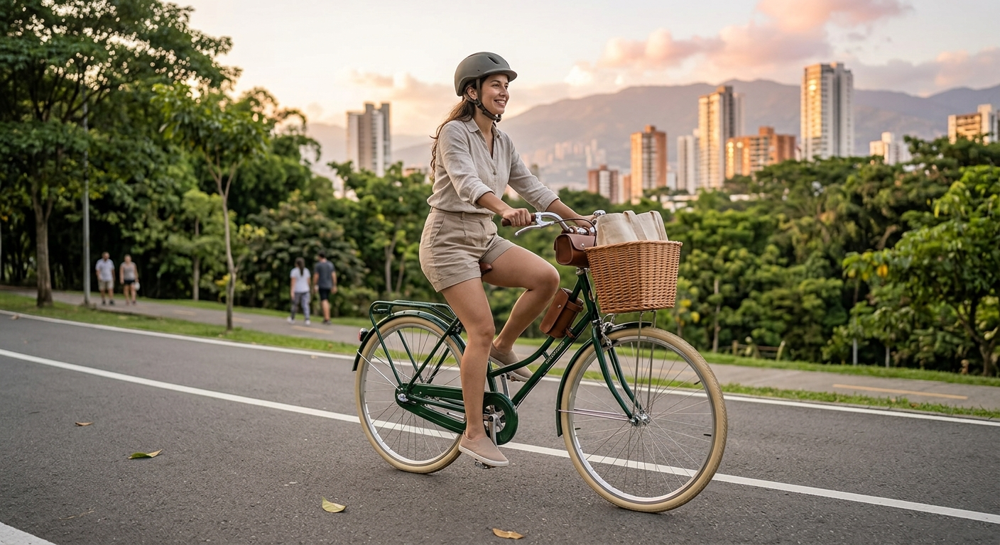

Urbana clasica
Cómoda y liviana para las ciclorrutas de la ciudad. Diseñada con un estilo tradicional elegante, posición de manejo erguida, asiento acolchado de gran confort y una práctica canasta frontal ideal para tus trayectos diarios o paseos relajados.
$10.000
RESERVAR